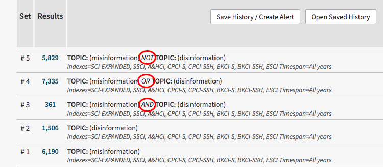
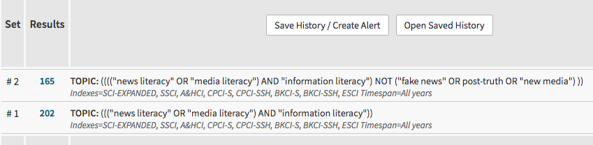
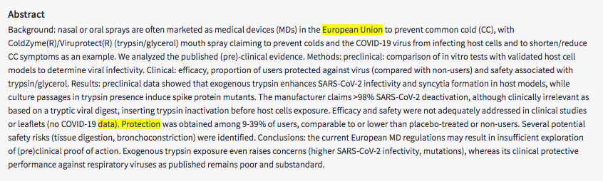

Za udeležence
Za izvajalce
Trainees Edition
Trainers Edition
MODUL 14: UČINKOVITE STRATEGIJE ISKANJA
Opis modula
Glavni namen tega modula je razložiti nekatere iskalne funkcije in operatorje, ki so potrebni za razvoj učinkovite strategije iskanja. Sekundarni namen je usmerjanje predavateljev, ki želijo vsebino tega modula uporabiti pri usposabljanju svojih udeležencev. V skladu s temi cilji so v tem modulu obravnavani Boolova logika, nadzorovani besednjaki, iskanje po poljih, iskanje po bližnjici, krajšanje in nadomestni znaki, omejitve do iskanja z omejitvami ter smernice za poučevanje te teme. Udeleženci, ki bodo uspešno zaključili ta modul, bodo znali,- razumeti, zakaj je pomembna učinkovita strategija iskanja,
- razumeti Boolovo logiko in opredeliti operatorje (IN, ALI, NE),
- razumeti pomen nadzorovanih besednjakov,
- razumeti iskanje po poljih in opredeliti osnovna polja,
- opredeliti operatorje bližine ter razlikovati med sosedskimi in bližnjimi operatorji,
- razumeti, zakaj in kako uporabljati krajšanje in nadomestne znake.
Struktura modula
Ta modul je sestavljen iz naslednjih delov:- Opis modula (objectives, description of the content, and learning outcomes)
- Struktura modula
- Smernice za udeležence usposabljanja
- Smernice za izvajalce usposabljanja (kako se pripraviti, metode za uporabo in nasveti za izvajalce usposabljanja)
- Vsebina (študijsko gradivo in vaje)
- Kviz
- Viri (reference in priporočeni viri ter videoposnetki)
Smernice za udeležence usposabljanja
Od udeležencev izobraževanja se pričakuje, da bodo prebrali besedilo, si ogledali priporočene videoposnetke in izvedli vaje. Za dodatne informacije lahko poiščejo predlagane vire. Po končanem študiju vsebine učencem priporočamo, da opravijo kviz za oceno svojega napredka. Po potrebi lahko ponovno pregledajo študijsko gradivo.
Smernice za izvajalce usposabljanja
Smernice za izobraževalce vključujejo predloge in nasvete o tem, kako predstaviti vsebino tega modula odraslim.
Priprava
Priporočamo pripravo predstavitve (PowerPoint/Prezi/Canva), ki je podprta z vizualnim gradivom in prikazuje rezultate iskanja v podatkovnih bazah/iskalnikih. Med tečajem se priporoča tudi predstavitev v realnem času.
Kako začeti
Na začetku lahko uporabite kratek kviz (3 do 5 vprašanj) v programu Kahoot ali vprašanja z Mentimetrom, da udeležence vključite v razpravo o temi. Kviz se lahko uporablja tudi kot motivacijsko orodje, pa tudi kot orodje za preverjanje obstoječega znanja udeležencev o temi. Nekateri primeri vprašanj so lahko naslednji: Kaj so Boolovi operatorji? Kaj so okrajšave? Kako lahko uporabimo narekovaje za iskanje po frazah?
Učne metode
Med usposabljanjem se lahko kombinirajo različne učne metode. Na primer:
- predavanje
- diskusija
- delo v skupinah
- samorefleksija
Nasveti za izobraževalca
Ogrevanje
Učinkovit način vključevanja udeležencev in njihovih pričakovanj glede tega, kaj se bodo naučili, je postaviti nekaj predhodnih vprašanj o temi. Udeležence usposabljanja lahko na primer prosite, da opravijo spletno iskanje za eno ali več dogovorjenih poizvedb. Dejavnost se lahko izvede na naslednji način:
- Pripravite različne poizvedbe, pri katerih je treba uporabiti iskalne strategije.
- Za vsako poizvedbo izberejo podatkovno zbirko.
- Prosite udeležence, da za te poizvedbe izvedejo spletna iskanja.
- Prosite udeležence, da shranijo svojo iskalno strategijo in rezultate.
- Prosite udeležence, da svoje rezultate delijo z drugimi udeleženci in o njih razpravljajo.
Po izmenjavi mnenj se prepričajte, da udeleženci razumejo, da različne iskalne strategije prinašajo različne rezultate. Udeleženci morajo razumeti prednosti učinkovitih strategij iskanja.
Predstavitev učnih ciljev
Jasno je treba opredeliti cilj učne ure (razložiti učinkovite iskalne strategije in razumeti vpliv uporabe teh strategij na rezultate iskanja). Po vprašanjih za ogrevanje bo lažje pojasniti cilje.
Predstavitev učnih vsebin
Med predstavljanjem vsebine poskrbite za interakcijo z udeleženci in jih spodbudite k aktivnemu sodelovanju.
Pred
- Pred lekcijo pripravite poizvedbe, s katerimi bodo udeleženci vadili iskanje (določite poizvedbe, izvedite iskanja za te poizvedbe in preizkusite različne podatkovne zbirke za poizvedbe).
- Odločite se, katere vire in podatkovne zbirke boste uporabili za vajo.
Med
- Udeležence vprašajte za mnenje o tem, zakaj je pomembna učinkovita iskalna strategija.
- Udeležence vprašajte, kakšen je učinek učinkovite iskalne strategije na iskanje informacij.
- Udeležence prosite, naj izvedejo iskanje o danih poizvedbah in shranijo rezultate.
Nato
- Po razlagi tem prosite udeležence, naj izvedejo ista iskanja, kot so jih izvedli na začetku lekcije. Na primer, po razlagi logičnih operatorjev prosite udeležence, naj izvedejo isto poizvedbo z uporabo logičnih operatorjev.
- Primerjajte prejšnje shranjene rezultate z novimi rezultati.
- Nekatere tehnike (na primer krajšanje, nadomestni znaki itd.) se lahko razlikujejo od podatkovne zbirke do podatkovne zbirke. Izvedite enake poizvedbe v različnih zbirkah podatkov
- Razpravljajte o rezultatih z udeleženci.
Predlogi
- Pouk podprite s praktičnimi primeri in vajami.
Zaključek
Na kratko povzemite lekcijo in postavite vprašanja, ki bi pomagala poudariti najpomembnejše vsebine in prakse, ki bi jih radi poudarili. Na primer:
- Zakaj so pomembne učinkovite iskalne strategije?
Po razpravi se prepričajte, da udeleženci usposabljanja razumejo, da so iskalne strategije zelo pomembne za iskanje informacij in da raziskovalcem omogočajo celovit načrt za izvedbo iskanja. Poznavanje učinkovitih strategij iskanja bo udeležencem omogočilo temeljito in učinkovito zadovoljevanje informacijskih potreb.
Vsebina: Učinkovite strategije iskanja
Uvod
Novičarska pismenost vključuje razumevanje vloge novic v družbi, motivacijo za iskanje novic ter sposobnost iskanja, identifikacije, prepoznavanja, kritičnega vrednotenja in ustvarjanja novic (Malik, Cortesi in Gasser, 2013, str. 8-9). Če se izrazimo bolj splošno: da bi bili ljudje pismeni (na področju informacij, novic, podatkov, financ itd.), morajo imeti spretnosti in znanje za iskanje informacij, ki bodo zadovoljile njihove potrebe.
Učinkovita iskalna strategija je pomembna za iskanje informacij, ki so pomembne za raziskovalne teme. Na splošno je iskalna strategija celovit načrt za doseganje raziskovalnih ciljev. Pred začetkom spletnega iskanja (izvajanjem učinkovite iskalne strategije) je treba ugotoviti, ali je poizvedba iskanje po znanih predmetih ali predmetno iskanje. Iskanje po znanem predmetu je poizvedba po dejanskem (ali znanem) viru. Pri tej vrsti iskanja uporabimo informacije, ki opisujejo predmet, kot so ime avtorja, naslov, ime publikacije itd. Predmetno iskanje je poizvedba po informacijah o določeni temi. "To je najzahtevnejša vrsta iskanja, saj ne morete natančno določiti, kaj potrebujete in kaj lahko varno zavrnete" (Fulton & McGuinness, 2016, str. 123). Omeniti velja, da so pri tej vrsti iskanja še posebej pomembne in odločilne učinkovite iskalne strategije.
Po odločitvi o vrsti poizvedbe je treba izbrati ustrezen vir/podatkovno zbirko (glejte tudi modul 12). Nato je treba opraviti analizo faset in logično kombinacijo. "Faseta je beseda ali zelo kratka besedna zveza, ki opisuje en sam koncept ali idejo" (Markey, 2019, str. 98). Na primer: ali obstaja povezava med "lažnimi novicami" in "družbenimi mediji"; za to poizvedbo so fasete: lažne novice in družbeni mediji.
Po predhodni pripravi iskanja je treba uporabiti učinkovito iskalno strategijo. V tem razdelku bodo obravnavane nekatere iskalne funkcije in operaterji, potrebni za pripravo učinkovite iskalne strategije.
Boolova logika
V večini informacijskih podatkovnih zbirk in iskalnikov se uporabljajo logični operatorji, ki omogočajo združevanje sinonimov in variantnih pojmov za dostop do ustreznih elementov (Alexander, 2003, str. 62).
Boolova logika se nanaša na logično razmerje med pojmi v iskanju. IN, ALI in NE so osnovni Boolovi operatorji. Ti operatorji razširjajo ali zožujejo iskanje.
- IN (angl. AND) se vstavi med dva izraza: Ta operator sporoča iskalnemu sistemu, naj poišče vire, ki vsebujejo oba izraza,
- ALI (angl. OR) je vstavljen med dva izraza: Ta operator iskalnemu sistemu narekuje, da najde vire, ki vsebujejo oba izraza,
- NE (angl. NOT) je vstavljen med dva izraza: Ta operator pove iskalnemu sistemu, da iz prvega izraza A izključi vire, ki vsebujejo drugi izraz B (Markey, 2019, str. 100).
Primer 1: Iskanje teme v podatkovni zbirki Web of Science
Iskalni izrazi: napačne informacije, dezinformacije
Boolovi operatorji: IN, ALI, NE
V zgornjem iskanju:
# 1 boste našli zapise na temo napačnih informacij.
# 2 bo našel zapise na temo dezinformacij.
# 3 bo našel zapise, ki vsebujejo temi napačne informacije in dezinformacije.
# 4 bo našel zapise, ki vsebujejo teme na posamezne iskalne izraze napačne informacije ali dezinformacije; ali teme na oba iskalna izraza, uporabljena skupaj.
# 5 bo našel samo zapise, ki vsebujejo temo napačne informacije, in izključil zapise na temo dezinformacij.
Primer 2: Iskanje teme v podatkovni zbirki Web of Science
Iskalni izrazi: postresnica, post resnica, post-resnica
Boolovi operatorji: ALI
V zgornjem iskanju:
# 1 bo našel zapise na temo postresnica.
# 2 bo našel zapise na temo post resnica.
# 3 bo našel zapise na temo post-resnica.
# 4 bo našel zapise, ki vsebujejo posamezne iskalne izraze postresnica ali post resnica ali post-resnica; ali kombinacije, kot so postresnica in post resnica, postresnica in post-resnica, post resnica in post-resnica; ali vse tri iskalne izraze skupaj v istem zapisu.
Primer 3: Iskanje naslovov v podatkovni zbirki Web of Science
Iskalni izrazi: www, svetovni splet, "world wide web"
Boolovi operatorji: ALI
V zgornjem iskanju:
# 1 bo našel zapise z www v naslovu.
# 2 bo našel zapise s svetovnim spletom v naslovu.
# 3 bo našel zapise, ki imajo v naslovu skupaj svetovni splet in www; ali zapise, ki imajo v naslovu samo enega od iskalnih izrazov.
# 4 bo našel zapise, v katerih sta v naslovu navedena tako "world wide web" kot www; ali zapise, v katerih je v naslovu samo eden od iskalnih izrazov.
Primer 4: Iskanje teme v podatkovni zbirki Web of Science
Iskalni izrazi: propaganda, politična
Boolovi operatorji: NE
V zgornjem iskanju:
# 1 bo našel zapise na temo propagande.
# 2 bo našel zapise na temo politične.
# 3 bo našel zapise na temo propaganda, vendar bo izključil zapise na temo politika.
Gnezdenje
Gnezdenje se uporablja za organizacijo logike iskanja in vrstnega reda izvajanja logičnih ukazov. Gnezdenje je običajno označeno z oklepaji (Alexander, 2003, str. 62). Z gnezdenjem se oklepaji uporabljajo za to, da so pojmi, ki so si podobni, skupaj, in da se zbirki podatkov ukaže, naj najprej poišče iskalne izraze v oklepajih. Sistem obdela Boolov ukaz tako, da najprej prebere izjavo v najglobljem oklepaju in nato nadaljuje z branjem navzven do skrajnega oklepaja.
Primer 1: Tema = ((novice ALI mediji) IN pismenost) NE "novi mediji"
V zgornjem primeru bo zbirka podatkov najprej poiskala dokumente o novicah ALI medijski pismenosti in izločila dokumente, ki vsebujejo "novi mediji".
Primer 2: Iskanje teme v podatkovni zbirki Web of Science
Iskalni izrazi: novičarska pismenost, medijska pismenost, informacijska pismenost, post-resnica, lažne novice, novi mediji
Boolovi operatorji: IN, ALI, NE in GNEZDENJE
V zgornjem iskanju:
# 1 bo našel zapise na temo novinarska in informacijska pismenost ali medijska in informacijska pismenost.
# 2 bo najprej našel zapise na teme novinarska in informacijska pismenost; ali medijska in informacijska pismenost ter izključil dokumente, ki vključujejo "lažne novice" ali "post-resnica" ali "novi mediji".
Vaje
- Upoštevajte te trditve. Poskusite opisati z besedami, kakšna bi bila vsebina dokumentov, pridobljenih na podlagi teh izjav. Izjave preizkusite v eni multidisciplinarni podatkovni zbirki (npr. ScienceDirect, Academic Search Ultimate).
revije ALI časopisi NE knjige
(revije ALI časopisi) NE knjige
(revije ALI časopisi) IN knjige
revije ALI (časopisi IN knjige)
(revije ALI (časopisi NE knjige)) IN knjižnice
- Izberite nekaj izrazov, ki se nanašajo na temo, ki vas zanima, in za iskanje po njih preizkusite več Boolovih kombinacij.
Nadzorovani slovarji
Podatkovne zbirke za indeksiranje zapisov uporabljajo nadzorovane slovarje; to je ena najpomembnejših razlik med podatkovnimi zbirkami in spletom z vidika iskanja (Fulton & McGuinness, 2016, str. 131).
Nadzorovani slovar je "organizirana ureditev besed in besednih zvez, ki se uporablja za indeksiranje vsebine in/ali za pridobivanje vsebine z brskanjem ali iskanjem" (Harpring, 2010). Z drugimi besedami, nadzorovani slovar je seznam enakovrednih izrazov v obliki kroga sinonimov ali seznam prednostnih izrazov. Opredeljuje hierarhične odnose med izrazi s širšimi, ožjimi, sorodnimi izrazi (Morville & Rosenfeld, 2007, str. 194). Za čim večjo učinkovitost iskanja in pridobivanje sorodnih zapisov je priporočljivo uporabljati izraze iz kontroliranega besednjaka. V primeru, da izraz, ki ga izbere uporabnik, in izraz, ki ga uporablja sistem, nista enaka, podatkovne zbirke zagotavljajo spletne tezavre/področne izraze/indekse, da bi olajšali izbiro ustreznih izrazov ali deskriptorjev, uporabljenih v sistemu (Fulton & McGuinness, 2016, str. 132). Nadzorovani slovar je znan tudi kot predmetna gesla, tezaver, deskriptorji ali nadzor avtoritete (Bell, 2015, str. 33). "Tezaver je uradni izraz za posebno vrsto nadzorovanega besedišča [...]. Tezaver lahko seznam predmetnih gesel podaja hierarhično, pri čemer prikazuje odnose med izrazi (širši, ožji, sorodni), in lahko zagotavlja napotke za najboljše izraze, ki jih je treba uporabiti" (Bell, 2015, str. 48).
- Širši izrazi prikazujejo "hierarhično razmerje med dvema izrazoma kontroliranega slovarja v tezavru, ki izraža bodisi razmerje med celoto in delom ali vrsto, pri čemer širši izraz označuje celoto ali vrsto" (Markey, 2019, str. 367).
- Ožji izrazi kažejo "hierarhično razmerje med dvema izrazoma kontroliranega slovarja v tezavru, ki izraža razmerje med celotnim delom ali vrsto, pri čemer ožji izraz označuje del ali vrsto" (Markey, 2019, str. 373).
- Sorodni izrazi prikazujejo "izraz iz kontroliranega slovarja v tezavru, ki je usklajen z drugim izrazom iz kontroliranega slovarja. Ker sta oba termina na isti ravni v hierarhiji, nista hierarhično povezana. Imenuje se tudi asociativno razmerje" (Markey, 2019, str. 375).
- Uporablja se za prikazuje "v avtoritetnem zapisu seznam neuporabljenih sopomenk za avtorizirano ime, predmet ali naslov zapisa" (Markey, 2019, str. 379).
Primer 1: Brskanje po tezavru Library, Information Science & Technology (slov. za knjižnico, informacijsko znanost in tehnologijo)
Izraz: pismenost
Ko v tezaver vnesete iskalni izraz, na primer pismenost, lahko dobite zapis, ki je videti nekako takole:
Pismenost je veljavni iskalni izraz, ki se uporablja za opis informacijskih elementov v podatkovni zbirki Library, Information Science & Technology. Izobraževanje je širši izraz za pismenost; primera ožjih izrazov sta računalniška pismenost in meta-literatura. Nepismene osebe in bralci so nekateri primeri sorodnih izrazov. Pismenost je treba uporabljati namesto (Uporablja se za) nepismenosti.
Bell (2015, str. 33-34) navaja naslednje prednosti nadzorovanega slovarja:
- Prihrani vam razmišljanje o vseh možnih sopomenkah ali alternativnih črkovanjih izraza. Če je na primer oblačilo določeno kot predmetni naslov za vse dokumente, ki so povezani z "oblačili", vam ni treba razmišljati o drugih sorodnih izrazih, kot so; obleka, kostum, oprava itd.
- Z uporabo nadzorovanega slovarja bi moralo biti vaše iskanje popolnejše (če so indikatorji zanesljivi/dosledni pri dodeljevanju predmetnih naslovov za izraze).
- Seznami predmetnih rubrik razločujejo besede, ki imajo več pomenov. Pri imenih avtorjev nadzor avtoritete omogoča iskanje avtorja, znanega pod več imeni (npr. Mark Twain/Samuel Clemens).
Iskanje po področjih
Iskanje po področjih omogoča iskalcu, da iskalne izraze in fraze omeji na posamezna področja, kar zagotavlja bolj jedrnate in ustrezne rezultate iskanja (Alexander, 2003, str. 62). Omejitev iskanja na določeno polje, na primer iskanje določenega imena samo v polju "ime publikacije", lahko pripomore tudi k skrajšanju časa obdelave iskanja v sistemu.
Zapisi v podatkovnih zbirkah uporabljajo polja za označevanje informacij o virih in opisovanje določene vrste podatkov, kot so avtor, naslov ali povzetek. "Ko iskalni sistemi indeksirajo vrednosti v poljih, sledijo poljem, iz katerih so bile vrednosti pridobljene" (Markey, 2019, str. 112).
Imena polj se lahko razlikujejo glede na podatkovno zbirko. Nekaj primerov imen polj: avtor, pripadnost avtorja, naslov, vir (ime publikacije, naslov revije ali knjige), ključne besede, predmet, tema, agencija za financiranje, leto itd. Nekatere podatkovne zbirke za iskanje uporabljajo kode polj, na primer AU: avtor; TS: tema. Te kode so specifične za posamezno podatkovno zbirko.
Primer 1: Imena polj in opredelitve iz podatkovne zbirke IEEE Xplore
| Ime polja | Definicija |
| Povzetek | Kratek povzetek ali izjava o vsebini članka v reviji, prispevka na konferenci, standarda, knjige, poglavja v knjigi ali tečaja. |
| Pripadnost avtorja | Institucionalna pripadnost avtorjev, navedenih v dokumentih (univerza, vladna agencija, korporacija itd.). |
| Ključne besede avtorja | Izrazi, ki jih navede avtor in opisujejo teme ali predmete dokumenta. |
| Avtorji | Ime avtorja ali avtorjev, navedenih v dokumentu. |
| Naslov dokumenta | Naslov posameznega dokumenta (članek v reviji, prispevek na konferenci, standard, poglavje v knjigi ali tečaj). |
| Polno besedilo in metapodatki | Polno besedilo se nanaša na besedilo članka, dokumenta, standarda itd. Metapodatki so podrobne informacije, ki opisujejo celotno besedilo, kot so imena avtorjev, datum objave in DOI. |
| Indeksni izrazi | Kombinirano polje, ki uporabnikom omogoča iskanje po ključnih besedah avtorja, izrazih IEEE, izrazih INSPEC in izrazih mreže. |
| Naslov publikacije | Naslov publikacije (revije, konference ali knjige). |
Vir: IEEEE Xplore: Resources and Help (slov. EEEE Explore: Viri in pomoč)
Primer 2: Iskanje z imeni polj v podatkovni zbirki Web of Science
2.1. Iskanje z uporabo imen polj (tema, naslov, avtor, ime publikacije, leto objave, vrsta dokumenta in okrepljena organizacija) v podatkovni zbirki Web of ScienceIskanje približkov
Iskanje približkov omogoča, da določite, da se mora izraz A pojaviti znotraj toliko in toliko besed izraza B. Če bi na primer želeli najti nekaj o varstvu podatkov v Evropski uniji, bi lahko uporabili strategijo iskanja, kot je npr.:
TS = "Evropska unija" IN "varstvo podatkov"
bo zagotovo prinesla ustrezne rezultate, vendar tudi veliko nerelevantnih rezultatov, saj se lahko iskalni izrazi pojavijo kjer koli v iskanem dokumentu. Na primer:
Večina sistemov podatkovnih zbirk omogoča nastavitev zahtevnejšega iskanja, pri katerem določite pravilo za razmerje med iskalnimi izrazi. To pomeni, da lahko določimo, kako blizu drug drugemu in včasih v kakšnem vrstnem redu se morajo iskalni izrazi pojavljati v besedilu, da jih je mogoče poiskati. To je znano kot iskanje približkov (Bell, 2015, str. 49). Iskanje približkov pomaga doseči večjo natančnost pri pridobljenih dokumentih.
Pri iskanju približkov se uporabljajo posebni operatorji, ki se imenujejo operatorji približkov.
Operatorji približkov
Markey (2019, str. 375) pravi, da je operator približkov operator v sistemu iskanja, ki določa dve merili:
1 – kako blizu naj se besede pojavljajo v besedilu
2 – ali je zaporedje besed pomembno
Operatorji približkov pomagajo zožiti ali razširiti iskanje in izboljšati rezultate iskanja. Na primer: iskanje, "lažne novice" BLIZU 3 "napačne informacije" v zbirki podatkov ali "lažne novice" OKOLI (3) "napačne informacije", bi prineslo bolj specifične rezultate kot iskanje "lažne novice" IN "napačne informacije".
Žal se imena operatorjev in sintaksa razlikujejo od sistema do sistema.
Nekaj primerov je (v ang.) :
- WITHIN → Wn
Napačne informacije Wn družbeni mediji
To pomeni, da se morajo napačne informacije pojaviti v okviru dveh besed v družbenih medijih, da se lahko poiščejo. Kot odgovor na to iskanje bo na primer podatkovna zbirka EBSCOhost vrnila rezultate, kot so:
… deljenje napačnih informacij na družbenih omrežjih …
… napačne informacije na družbenih omrežjih ...
- PRE → Pre/n ali P/n
"Evropska unija" okvir PRE/5
To pomeni, da mora biti iskalni izraz Evropska unija na prvem mestu, pred njim pa mora biti okvir z največ pet besed. Na primer, kot odgovor na to iskanje bo podatkovna zbirka ProQuest vrnila rezultate, kot so:
... v pravnem okviru Evropske unije ...
... Evropska unija in Turčija v okviru ...
... Skupna kmetijska politika Evropske unije v okviru STO ...
- NEAR → Near/n ali N/n ali Nn
prikrajšani NEAR/5 otroci
To pomeni, da se besedi prikrajšani in otroci ne smeta pojaviti v več kot petih besedah, ne glede na besedni red. Na podlagi tega iskanja bo na primer podatkovna zbirka IEEE Xplore vrnila rezultate, kot so:
... šola za otroke iz prikrajšanih okoliščin …
... osnovna šola za otroke iz prikrajšanih okolij …
... prikrajšani, predšolski, nadarjeni otroci ...
.... otroci iz kulturno različnih/izobraževalno prikrajšanih okolij ....
Primer 1: Iskanje teme v podatkovni zbirki Web of Science
Iskalni izrazi: "lažne novice", "lažne informacije".
Operatorji bližine: NEAR

V zgornjem iskanju:
# 2 bo našel zapise z besedama "lažne novice" in "lažne informacije", ki se morata pojaviti v največ treh besedah, ne glede na besedni red.
Primer 2: Iskanje v Googlu
Iskalni izrazi: "lažne novice", "lažne informacije".
Operatorji približkov: AROUND
V nekaterih podatkovnih zbirkah in virih se namesto izraza operator približkov uporabljata izraza operator sosedstva in operator bližine. Razlika med operatorjema sosedstva in bližine je v besednem redu.
Operatorji sosedstva določajo, da morajo biti iskane besede sosednje, pri čemer je pomemben besedni red (Markey, 2019, str. 365). Kot primere operatorjev sosednosti lahko navedemo WITHIN (W), PRE in ~.
Primer iskanja rezultatov, ki bi se ujemali z "učinek množice" ali "učinek delavca v skupini", ne bi pa se ujemali z "učinkom skupine", bi bil:
EBSCOhost: bandwagon W2 učinek
ProQuest: bandwagon PRE/2 učinek
Taylor & Francis Online: “bandwagon učinek” ~2
Bližnji operatorji določajo, da so iskane besede ločene z eno ali več vmesnimi besedami in da vrstni red iskanih besed ni pomemben (Markey, 2019, str. 373). Kot primere bližnjih operatorjev lahko navedemo NEAR, N in ~.
Primer iskanja rezultatov, ki bi ustrezali "splošno varstvo podatkov v Evropski uniji", "varstvo podatkov v Evropski uniji", "razvoj Evropske unije na področju varstva podatkov", bi bil:
EBSCOhost: “varstvo podatkov” N2 “Evropska unija”
ProQuest: bandwagon NEAR/2 učinek
Taylor & Francis Online: "varstvo podatkov" "Evropska unija"~2
Iskanje po frazah
Iskanje po frazah je označeno tako, da so izrazi, ki jih želite iskati, v obliki natančne fraze (npr. "digitalna pismenost") med narekovaji. Z iskanjem po frazah lahko zagotovite, da se bodo vaši iskalni izrazi v rezultatih iskanja prikazali kot natančno ujemanje. Ta pristop pomaga zožiti iskanje, saj izloči rezultate, v katerih se pojavljata oba izraza, vendar ne neposredno skupaj kot natančno ujemanje (Fulton in McGuinness, 2016, str. 136). Številne podatkovne zbirke (EBSCO, WoS, JSTOR itd.) in iskalniki, kot so Google, Bing in drugi, upoštevajo konvencijo, da se iskani izrazi kot natančna fraza zapišejo v dvojne narekovaje (Bell, 2015, str. 53).
- V nekaterih podatkovnih zbirkah, kot sta ScienceDirect ali Scopus, se pri iskanju po frazah ločila ne upoštevajo. Na primer, iskanje po besednih zvezah, kot je npr.:
"heart-attack" in "heart attack" (slov. srčni napad)
bo prineslo enake rezultate.
- V nekaterih podatkovnih zbirkah, kot je Scopus, je treba za iskanje natančnega ujemanja uporabiti zavite oklepaje {}. Na primer, iskanje natančnega ujemanja z uporabo zavitih oklepajev, kot je npr.:
“heart attack” in {heart attack} (slov. srčni napad)
ne bo prineslo enakih rezultatov. Kajti "heart attack" bo vrnilo tudi "heart attacks", {heart attack} pa ne bo vrnil "heart attacks".
Krajšanje in nadomestni znaki
Krajšanje
Krajšanje je učinkovit način razširitve iskanja z iskanjem različic istega izraza, na primer množinskih oblik. Krajšanje omogoča iskanje z besedno osnovo, ki omogoča iskanje katere koli besede, ki se začne s temi črkami (Bell, 2015, str. 54). Za takšno iskanje se besednemu jedru dodajo simboli krajšanja, kot so *, ?, $.
Na primer:
- za iskanje dokumentov, ki vsebujejo izraze knjižnica, knjižnice, knjižničar in knjižničarstvo, se besedni osnovi knjižni* doda zvezdica (*).
- če vzamemo še zapis besede informacijsko vedenje v angleščini, ki se rahlo razlikuje zaradi britanske in ameriške različice jezika oz. možnosti uporabe vezajev: information behaviour, information behavior,informational behavior, informational behaviour, information-behaviour, informativeness behaviour: besednemu jedru informa* beha* se doda zvezdica (*)
Zavedati se je treba, da se lahko simboli krajšanja razlikujejo glede na podatkovno zbirko ali iskalnik (Fulton in McGuinness, 2016, str. 137). Najpogosteje uporabljeni so:
*
?
!
$
Če je osnova samostojna beseda, bo ta vključena v rezultate iskanja (Bell, 2015, str. 54). Na primer:
- journal* (slov. dnevnik) prikliče zapise, ki vsebujejo besede journal, journals, journalism, journalist, journalists, journalists', journalistic, journaling
Pretirano krajšanje besed lahko povzroči nizko specifičnost. Na primer:
- cat* prikliče zapise cat, catalyst, catalogs, catastrophic itd. Če je iskalni izraz cat (mammal) (slov. mačka – sesalec), bo poizvedba, kot je cat, ali cats, prinesla natančnejše rezultate.
V nekaterih podatkovnih zbirkah so množinski števniki in pravopisne različice vključeni samodejno. Na primer, v podatkovni zbirki ScienceDirect:
"color code" ali "colour code" ali "color codes" (slov. barvna koda).
bo prinesla enake rezultate.
Nadomestni znaki
Nadomestni znaki delujejo na podoben način kot krajšanje. Simbol, kot so *, ?, !, se uporablja za iskanje izrazov, ki se lahko pišejo na različne načine. Uporabni so za iskanje izrazov, ki se pišejo tako v ameriškem kot britanskem jeziku (na primer licence in license). Simbol se običajno vstavi v besedo in nadomesti eno črko (Fulton in McGuinness, 2016, str. 13).
Na primer,
– uporaba "?" (nadomestni znak) → licen?e vrne rezultate → licenCe, licenSe (slov. licenca)
Z uporabo "?" (nadomestni znak) lahko pridobite edninske in množinske oblike nekaterih besed, na primer ženska, pa tudi ženske:
– wom?n → womAn, womEn
Nadomestni znaki se najpogosteje uporabljajo za zamenjavo samo ene črke (Bell, 2015, str. 56), v nekaterih podatkovnih zbirkah pa jih lahko uporabite za znak "od nič do enega" ali katero koli skupino znakov, ki prav tako ne vključuje nobenega znaka.
Na primer, uporaba nadomestnih znakov v podatkovni zbirki Web of Science:
- Zvezdica (*) predstavlja katero koli skupino znakov, vključno z nobenim znakom.
h*rana hitra hrana, hrana prihodnosti, frankenfood, ribja hrana, fit hrana
- Vprašaj (?) predstavlja katerikoli posamezni znak.
organizira?i organiziraTi, organizirAjte
- Znak za dolar ($) predstavlja nič ali en znak.
bar$a barva, barvE
V iskalnem izrazu lahko kombinirate nadomestne znake. Na primer,
- organi?acija* → ( ang.) organisation, organization, organizations, organizational
Opombe
- Upoštevajte, da so simboli, ki se uporabljajo za nadomestne znake, enaki tistim, ki se uporabljajo za krajšanje, vendar se učinek spreminja, odvisno od podatkovne zbirke. Na primer, ena podatkovna zbirka lahko uporablja "!" za krajšanje in "*" za nadomestni znak, medtem ko druga natančno obrne ta dva pomena (Bell, 2015, str. 56).
- Upoštevajte, da v nekaterih podatkovnih zbirkah ni razlike med nadomestnimi znaki in krajšavami. Na primer za uporabo "*" kot nadomestnega znaka v podatkovni zbirki Scopus,
criminal* liab* (slov. kriminalistični laboratorij)
bo vrnil rezultate, kot sta criminally liable in criminal liability (slov. kazensko odgovoren in kazenska odgovornost).
- Upoštevajte, da so v nekaterih podatkovnih zbirkah množinski števniki in pravopisne različice vključeni samodejno. Na primer:
heart attack (slov. srčni napad)
bo vrnil rezultate, ki vključujejo heart attacks (slov. srčni napadi)
anesthesia (slov. anestezija)
vrne rezultate, ki vključujejo anaesthesia (slov. anestezija)
- Upoštevajte, da v nekaterih podatkovnih zbirkah uporaba edninske oblike izraza prikliče edninsko, množinsko in svojilno obliko večine izrazov. Na primer:
criterion (slov. merilo)
najde criteria in criterion (slov. kriteriji in merilo)
- Upoštevajte, da se v nekaterih podatkovnih zbirkah, kadar je med nadomestnim znakom in besedo postavljen vezaj (-), nadomestni znak izpusti. Na primer:
*-art bo iskano kot art ( slov. umetnost)
art-* se bo iskalo kot art
(Scopus, 2021).
Izboljševanje iskanj
Skoraj vse podatkovne zbirke in iskalniki omogočajo uporabnikom, da izberejo možnosti za omejitev ali zoženje rezultatov iskanja.
Na primer: leta objave, vrsta članka/dokumenta (npr. pregledni članki, raziskovalni članki, poglavje v knjigi), vrsta vira (npr. revija, knjiga), naslov publikacije, avtor, predmetna področja (nevroznanost, psihologija itd.), ključna beseda, vrsta dostopa (npr. odprt dostop), pripadnost (npr. Univerza v Iowi) in jezik (npr. španščina).
To so nekateri od omejevalnikov, ki se uporabljajo za izpopolnjevanje rezultatov iskanja ali za omejevanje rezultatov iskanja.
Primer 1: Primer "izboljšave rezultatov" iz podatkovne zbirke Web of Science:
Kviz
Reference
Alexander, J.O. (2003). Library Applications. H. Bidgoli (Ed.), In Encyclopedia of Information Systems, (p. 57-76). Elsevier.
Bates, M.J. (1979). Information Search Tactics. Journal of the American Society for Information Science, 30, 205-214.
Bell, S.S. (2015). Librarian’s Guide to Online Searching: Cultivating Database Skills for Research and Instruction. California: Libraries Unlimited.
EBSCO Connect (2018). Searching with Boolean Operators. Retrieved from https://connect.ebsco.com/s/article/Searching-with-Boolean-Operators?language=en_US
Fulton, C. and McGuinness, C. (2016). Digital Detectives: Solving Information Dilemmas in an Online World. Amsterdam: Chandos Publishing.
Harpring, P. (2010). Uvod to controlled vocabularies: Terminology for art, architecture, and other cultural works. J. Paul Getty Trust. Retrieved from http://www.getty.edu/research/publications/electronic_publications/intro_controlled_vocab/index.html
IEEE Xplore: Resources and Help. (2021). Retrieved from https://ieeexplore.ieee.org/Xplorehelp/searching-ieee-xplore/command-search#summary-of-data-fields
Malik, M., Cortesi, S.C., and Gasser, U. (October 18, 2013). The Challenges of Defining 'News Literacy'. Berkman Center Research Publication No. 2013-20, DOI: http://dx.doi.org/10.2139/ssrn.2342313
Markey, K. (2019). Online Searching: A Guide to Finding Quality Information Efficiently and Effectively (2nd edition). Lanham: Rowman & Littlefield.
Morville, P. and Rosenfeld, L. (2007). Information Architecture for the World Wide Web. Farnham: O'Reilly.
Scopus: Access and use Support Center. (2021). Retrieved from https://service.elsevier.com/app/answers/detail/a_id/11213/c/10545/supporthub/scopus/
Priporočeni viri
Brown, C.C. (2021). Librarian's Guide to Online Searching: Cultivating Database Skills for Research and Instruction (6th Edition). Libraries Unlimited.
Dotto, C. & Smith, R. (October 2019). First Draft's Essential Guide to: Newsgathering and Monitoring on the Social Web. Retrieved from https://firstdraftnews.org/wp-content/uploads/2019/10/Newsgathering_and_Monitoring_Digital_AW3.pdf?x35395
Li, L. (2014). Scholarly information discovery in the networked academic learning environment. Oxfordshire, [England] : Chandos Publishing.
Mann, T. (2015). The Oxford Guide to Library Research (4th ed.). Oxford University Press.
Priporočeni videoposnetki
Boucher, A., Riesen, K., & Simpson, L. Basic Search Strategies for Systematic Reviews.